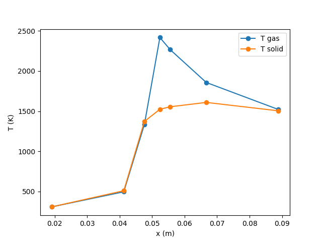

Note
Go to the end to download the full example code.
Reactor cascade model for reactive flows in inert porous media#
Showcases the use of ExtensibleReactor to add a temperature equation for a solid-phase
and custom heat transfer/radiation models.
This code implements a reactor cascade model for the simulation of reactive flows in porous media. The gas mixture with fuel and oxidizer flows through the porous material and the chemical reactions take place inside the pore cavities. The heat released by the chemical reactions heats up the solid materials. This heat is then transported by conduction in the solid and radiation upstream to heat up the reactants and stabilize the reaction zone. Given a reaction mechanism, equations for species mass fractions, gas phase temperature and solid temperature are solved. The reactor cascade consists of a variable number of cylindrical reactors. The Rosseland model is used for radiative heat transfer by the solid. A Nusselt number model is used to compute the heat transfer coefficient. This example assumes finding steady-state solutions with constant pressure so that mass controllers and pressure valves are not required. The code is written in a general way to support an arbitrary number of reactors and an arbitrary number of burner sections with different physical properties.
The porous media burner considered in this example is a cylindrical tube filled three different porous materials: a porous ceramic made from a Yttria-stabilized Zirconia Alumina (YZA) section with length of 2 inches and pore density of 40 pores per inches (PPI) which is supposed to act as the flame arrestor and therefore chemical reactions in this section are disabled, even though flashback is observed for high hydrogen dilution in the measurements. Next, a one inch section with a porous ceramic made from silicon carbide (SiC) with 3 PPI is used and finally a 1 inch section of SiC with 10 PPI. A flame stabilizes at the interface between the YZA and 3 PPI SiC.
|--- two inches --- | --- one inch ---| --- one inch --- |
__________________________________________________________
fuel
+ => YZA 40 PPI | SiC 3 PPI | SiC 10 PPI => burnt
air __________________________________________________________ gas
inert flame location heat recirculation
This example simplifies the complex interaction between heat transport in the gas-phase and solid-phase by using a reactor cascade. While key trends from the measurements can be recovered qualitatively, stability limits (blowoff and flashback) show large discrepancies to the measurements, as the interface stabilization requires detailed modeling of internal heat recirculation through heat transfer, conduction and radiation. For more realistic and quantitative predictions, running 1D simulations with full radiation transport is required.
More details about the governing equations, submodels and physical setup and corresponding experiments can be found in
Experimental and numerical investigation of flame stabilization and pollutant formation in matrix stabilized ammonia-hydrogen combustion, G. Vignat, T. Zirwes, E.R. Toro, K. Younes, E. Boigne, P. Muhunthan, L. Simitz, D. Trimis, M. Ihme Combustion and Flame, 250 (https://doi.org/10.1016/j.combustflame.2023.112642)
Requires: cantera >= 3.1.0, matplotlib >= 2.0
import matplotlib.pyplot as plt
import cantera as ct
import numpy as np
inch = 0.0254 # conversion of inches to meters
Tamb = 300. # ambient temperature (used for radiation modeling) (K)
TsInit = 300. # initial temperature of the solid (K)
constantP = ct.one_atm # gas pressure inside the porous medium (Pa)
mech = "gri30.yaml" # reaction mechanism file
phi = 1.3 # equivalence ratio (phi) of the fuel/oxidizer mixture
mdot = 0.3 # mass flux through the cascade (assumed constant) (kg/m^2/s)
# with respect to the cross-sectional area of the burner
# initial state of the gas phase containing fuel and oxidizer at the inlet
def getInitialGas(gas):
gas.set_equivalence_ratio(phi, fuel="CH4", oxidizer="O2:0.21,N2:0.79")
gas.TP = 300, constantP
# create gas phase objects for the fresh gas and burnt gas states
gas_init = ct.Solution(mech)
getInitialGas(gas_init)
gas_hot = ct.Solution(mech)
getInitialGas(gas_hot)
gas_hot.equilibrate("HP")
Y_in_inlet = gas_init.Y # mass fractions of the inlet flow
h_in_inlet = gas_init.enthalpy_mass # enthalpy of the inlet flow
# Class that represents a reactor of the reactor cascade
class ReactorProperties:
def __init__(self, diameter, length, midpoint, chemistry, TsInit, solid):
self.diameter = diameter # diameter of the reactor (m)
self.length = length # length of the section (m)
self.midpoint = midpoint # coordinate of the reactor center (m)
self.chemistry = chemistry # chemistry on or off in the reactor
self.TsInit = TsInit # initial temperature of the solid (K)
self.solid = solid # properties of the solid porous medium
# class to represent the properties of the solid porous media
class SolidProperties:
def __init__(
self,
porosity,
pore_diameter,
heat_conductivity,
specific_area,
solid_phase,
emissivity):
self.porosity = porosity # porosity of the porous medium
self.pore_diameter = pore_diameter # characteristic pore diameter in m
self.heat_conductivity = heat_conductivity # solid heat conductivity W/(m/K)
self.specific_area = specific_area # specific area (1/m)
self.emissivity = emissivity # emissivity of the solid
self.solid_phase = solid_phase # solution object for computing
# solid heat capacities and densities
# Thermal conductivity of the porous medium as function of solid temperature (W/m/K)
# Temperature-dependent fits from measurements:
# SiC: Thermal conductivity in hot-pressed silicon carbide, D.-K. Liu, B.-W. Lin,
# Ceramics International, 22(5), pp. 407-414 (1996)
# Note that in this simple model, 0.84 is the porosity of the SiC foams
def effectiveConductivitySiC(Ts): # for silicon carbide
return (1 - 0.84) * 1857.0 * Ts**(-0.5332)
# YZA: Thermal conductivity of zirconia–alumina composites, N.P. Bansal, D. Zhu,
# Ceramics International, 31(7), pp 911-916 (2015)
def effectiveConductivityYZA(Ts): # for yittria-stabilized zirconia alumina
return 0.3
# Define objects for the three sections of the porous media burner:
# YZA is the Yttria-stabilized Zirconia-Alumina section with pore density 40 PPI
# SiC3PPI is a silicon carbide porous medium with a pore density of 3 PPI
# SiC10PPI is a silicon carbide porous medium with a pore density of 10 PPI
YZA40PPI = SolidProperties(porosity=0.82,
pore_diameter=0.00025,
heat_conductivity=effectiveConductivityYZA,
specific_area=2373.,
solid_phase=ct.Solution("example_data/YZA.yaml"),
emissivity=0.85)
SiC3PPI = SolidProperties(porosity=0.84,
pore_diameter=0.0085,
heat_conductivity=effectiveConductivitySiC,
specific_area=246.075,
solid_phase=ct.Solution("example_data/silicon_carbide.yaml"),
emissivity=0.85)
SiC10PPI = SolidProperties(porosity=0.84,
pore_diameter=0.00134,
heat_conductivity=effectiveConductivitySiC,
specific_area=978.,
solid_phase=ct.Solution("example_data/silicon_carbide.yaml"),
emissivity=0.85)
# heat flux between the solid-phase of two neighboring reactors
def heat_flux(left, right):
# effective heat conductivity (lambda) in the solid
lambda_solid = 0.5 * (right.solidHeatConductivity() +
left.solidHeatConductivity())
# effective radiative heat conductivity (lambda) from the Rosseland model
lambda_rad = 0.5 * (right.radiationConductivity() +
left.radiationConductivity())
# approximate the temperature gradient between reactors
gradT = (right.Ts - left.Ts) / (right.midpoint - left.midpoint)
return (lambda_solid + lambda_rad) * gradT
# New reactor class that implements equations for reacting flows in porous media (PM)
class PMReactor(ct.ExtensibleIdealGasConstPressureReactor):
def __init__(self, *args, props, **kwargs):
super().__init__(*args, **kwargs)
self.Ts = props.TsInit # initial temperature of the solid
self.neighbor_left = None # reference to reactor on the left
self.neighbor_right = None # reference to reactor on the right
self.chemistry = props.chemistry # turn chemistry on or off
self.midpoint = props.midpoint # coordinate of reactor center (m)
self.solid = props.solid # solid density and heat capacity
self.diameter = props.diameter # reactor diameter (m)
self.A = np.pi * (0.5 * props.diameter)**2 # cross sectional area (m^2)
self.V = self.A * props.length # reactor volume (m^3)
self.molecular_weights = None
self.species_offset = None
def after_initialize(self, t0):
self.n_vars += 1 # additional equation for the solid temperature
self.index_Ts = self.n_vars - 1
self.species_offset = self.component_index(self.thermo.species_name(0))
self.molecular_weights = self.thermo.molecular_weights
def after_get_state(self, y):
y[self.index_Ts] = self.Ts
y[self.component_index("mass")] = self.thermo.density_mass * self.V
# compute the effective conductivity for heat conduction within the solid
def solidHeatConductivity(self):
return self.solid.heat_conductivity(self.Ts)
# effective conductivity for radiative heat transfer from the Rosseland model
def radiationConductivity(self):
extinctionCoef = (3.0 / (self.solid.pore_diameter)) * \
(1.0 - self.solid.porosity)
return 16.0 * ct.stefan_boltzmann * self.Ts**3 / (3.0 * extinctionCoef)
def after_update_state(self, y):
self.Ts = y[self.index_Ts]
# heat transfer coefficient (htc) based on a Nusselt (Nu) correlation
def htc(self):
d_h = 4.0 * self.solid.porosity / self.solid.specific_area # hydraulic diameter
density = self.thermo.density_mass
u = mdot / (density * self.solid.porosity) # gas velocity
Re = density * u * d_h / self.thermo.viscosity # Reynolds number
lambda_gas = self.thermo.thermal_conductivity
Pr = self.thermo.cp_mass * self.thermo.viscosity /lambda_gas # Prandtl number
Nu = 3.7 * (Re**0.38) * (Pr**0.25)
return Nu * self.solid.specific_area * self.thermo.thermal_conductivity / d_h
# implement the new governing equations
def replace_eval(self, t, LHS, RHS):
for i in range(self.n_vars):
LHS[i] = 1.0
RHS[i] = 0.0
# update solid properties with current values of the solid temperature
self.solid.solid_phase.TP = self.Ts, constantP
# create some variables for convenience
Y = self.thermo.Y
density = self.thermo.density_mass
cp = self.thermo.cp_mass
porosity = self.solid.porosity
solid_density = self.solid.solid_phase.density
solid_cp = self.solid.solid_phase.cp
# If this reactor has no left neighbor, it is the first reactor in the cascade.
# In this case, set initial mass fractions and enthalpies as inlet conditions
if self.neighbor_left is None:
Y_in = Y_in_inlet
h_in = h_in_inlet
else: # otherwise, take the mass fraction and enthalpy from the left neighbor
Y_in = self.neighbor_left.thermo.Y
h_in = self.neighbor_left.thermo.enthalpy_mass
# ============================================================================#
# Temperature of the solid #
# ============================================================================#
LHS[self.index_Ts] = (1.0 - porosity) * solid_cp * solid_density * self.V
# heat transfer between gas and solid
RHS[self.index_Ts] += self.htc() * (self.thermo.T - self.Ts) * self.V
# compute the axial heat loss due to radiation to the ambience
# if this is the first or last reactor in the cascade
if self.neighbor_left is None or self.neighbor_right is None:
RHS[self.index_Ts] -= ct.stefan_boltzmann * self.solid.emissivity \
* (self.Ts**4 - Tamb**4) * self.A
# compute heat flux in the solid between the reactors in the cascade
if self.neighbor_left is not None:
RHS[self.index_Ts] -= heat_flux(self.neighbor_left, self) * self.A
if self.neighbor_right is not None:
RHS[self.index_Ts] += heat_flux(self, self.neighbor_right) * self.A
# ============================================================================#
# species mass fractions #
# ============================================================================#
wdot = self.kinetics.net_production_rates # chemical source terms
if not self.chemistry:
wdot *= 0.0
# right hand side of the mass fraction equations
for k in range(self.thermo.n_species):
index = k + self.species_offset
# chemical source term
RHS[index] += wdot[k] * self.molecular_weights[k] / density
# convective contribution
RHS[index] += self.A * mdot / \
(self.V * porosity * density) * (Y_in[k] - Y[k])
# ============================================================================#
# Temperature of the gas #
# ============================================================================#
# right hand side of the gas phase temperature equation
enthalpy_loss = np.dot(self.thermo.partial_molar_enthalpies
/ self.molecular_weights, Y_in)
hrr = -np.dot(self.thermo.partial_molar_enthalpies, wdot) # (W/m^3)
Tindex = self.component_index("temperature")
LHS[Tindex] = porosity * density * cp * self.V
# heat transfer between solid and gas-phase
RHS[Tindex] -= self.htc() * (self.thermo.T - self.Ts) * self.V
# convective transport
RHS[Tindex] += self.A * mdot * (h_in - enthalpy_loss)
# chemical contribution
RHS[Tindex] += hrr * self.V * porosity
def before_component_index(self, name):
if name == "Ts":
return self.index_Ts
def before_component_name(self, i):
if i == self.index_Ts:
return "Ts"
# list of reactors that form the cascade
reactors = []
# Define 7 reactors, each with a different length (m), and total length of 4 inches.
# Increasing the number of reactors improves the "resolution" and thus the accuracy
lengths = [
1.5 * inch,
0.25 * inch,
0.25 * inch,
0.125 * inch,
0.125 * inch,
0.75 * inch,
1 * inch]
total_length = np.sum(lengths)
sum_lengths = 0.
# add each reactor one by one to the list
for rL in lengths:
midpoint = sum_lengths + 0.5 * rL # midpoint of the current reactor
sum_lengths += rL
if midpoint < total_length * 0.5:
# for the left half of the burner, fill all reactors with cold inert 40 PPI YZA
props = ReactorProperties(
diameter=2 * inch,
length=rL,
midpoint=midpoint,
chemistry=False,
TsInit=TsInit,
solid=YZA40PPI)
reactors.append(PMReactor(gas_init, props=props))
elif midpoint < total_length * 0.75:
# for 2 inches < x < 3 inches, fill the reactors with hot 3 PPI SiC
props = ReactorProperties(
diameter=2 * inch,
length=rL,
midpoint=midpoint,
chemistry=True,
TsInit=gas_hot.T,
solid=SiC3PPI)
reactors.append(PMReactor(gas_hot, props=props))
else:
# x >= 3 inches, fill the reactors with hot 10 PPI SiC
props = ReactorProperties(
diameter=2 * inch,
length=rL,
midpoint=midpoint,
chemistry=True,
TsInit=gas_hot.T,
solid=SiC10PPI)
reactors.append(PMReactor(gas_hot, props=props))
# set the neighbor relations between the reactors
for i, r in enumerate(reactors):
if i != 0:
r.neighbor_left = reactors[i - 1]
if i != len(reactors) - 1:
r.neighbor_right = reactors[i + 1]
# create the cascade and set the numerical tolerances for time integration
net = ct.ReactorNet(reactors)
net.max_steps = 100000
net.atol = 1e-9
net.rtol = 1e-4
net.atol_sensitivity = 1e-3
net.rtol_sensitivity = 0.05
# simulate the flow through burner until the steady-state
net.advance_to_steady_state()
x = [r.midpoint for r in reactors]
T = [r.thermo.T for r in reactors]
Ts = [r.Ts for r in reactors]
plt.plot(x, T, "-o", label="T gas")
plt.plot(x, Ts, "-o", label="T solid")
plt.legend()
plt.xlabel("x (m)")
plt.ylabel("T (K)")
plt.savefig("T.png")
Total running time of the script: (0 minutes 6.260 seconds)